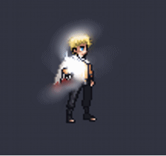
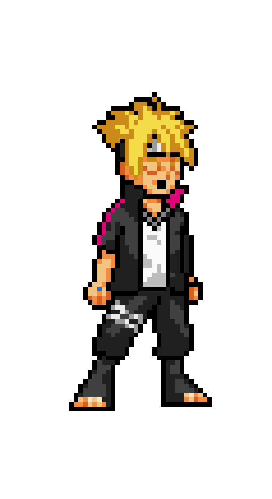
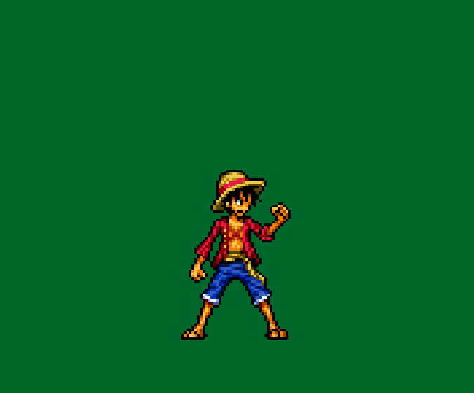
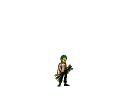

-
Naruto Hokage #001
- Ninja
O Sétimo Hokage da Aldeia da Folha.
-
Borushiki #002
- Ninja
Filho mais velho do Hokage Naruto Uzumaki, Boruto foi infectado em batalha contra Momoshiki Otsutsuki e carrega seu espírito dentro da própria consciência.
-
Luffy #003
- Pirata
Capitão dos Mugiwaras, ele comeu a Gomu Gomu no Mi, que é a fruta da borracha, que permite ao usuário esticar toda e qualquer parte do corpo.
-
Zoro #004
- Pirata
Imediato da tripulação dos Mugiwaras, Roronoa Zoro se utiliza de três espadas para cortar seus adversários.
-
Son Goku #005

- Sayajin
Goku é um guerreiro sayajin que reside na Terra e consegue se transformar até o nivel de Super Sayajin Blue.
-
Vegeta #006

- Sayajin
Príncipe da raça Sayajin, Vegeta é um guerreiro muito poderoso e arrogante, capaz de qualquer coisa para atingir seus objetivos.